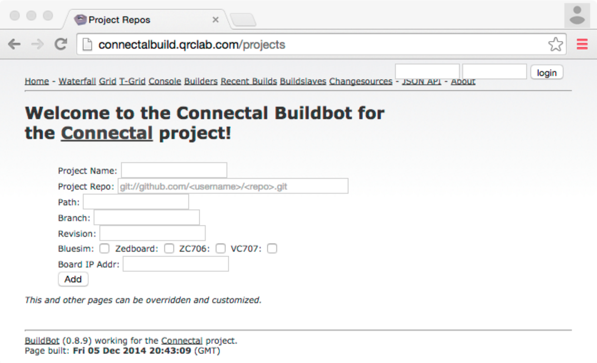

Compiling and Running Connectal Project¶
Compiling on ConnectalBuild¶
The Connectal toolchain can be run on ConnectalBuild using the following Buildbot web interface: http://connectalbuild.qrclab.com/projects.
Before submitting a project, you must sign in using your github
credentials. We do not store credentials, but pass them througth
to github. Next, enter a name for the project, which will be used
for subsequent build requests through the Buildbot web interface. The
project must be in a publicly accessible git-hub repository, whose
Repo location is entered beginning with git:// as follows
git://github.com/connectal-examples/leds.git. If the project
makefile is not in the root directory of the repository, enter its
relative path in the ‘Path’ field of the form. If a particular branch
or revision number are desired, enter these as well. Check the button
to select the build target. If you have selected a zynq-based
platform and would like the tool-chain to automatically program the
device and execute the design as its final step, then enter the IP
address of your board. This works only because adb doesn’t
require authentication. SSH keys required to run on PCIe-based
platforms are not currently supported. Finally, don’t forget to click
‘Add’. If the project name has already been used, you will be prompted
to enter a new one at this point.
Compiling Locally¶
Before compiling a project locally, you will need to install the
toolchain. After setting the CONNECTALDIR to the root of the
connectal source tree, enter the command make
Running the Design¶
When preparing a zedboard:
- Following the directions in the zynq-boot git repo, create an Android boot SD card files.
- Write the SD card files into the first partition of an SD card (FAT format).
- Verify that the boot mode jumpers on the board are JP8/9/10 (MIO3/4/5) == 110 for booting from SD card.
- Verify that the PS_MIO0 pull-down jumper on the board JP6 is shorted.
- Connect a USB cable to the ‘UART’ connector. Use the ‘connectable’ program from the connectable git repo to display linux console output.
- Connect an ethernet cable (linux uses DHCP to get an IP address during boot).
When preparing a PCIe board:
- Attach a USB cable to the JTAG port